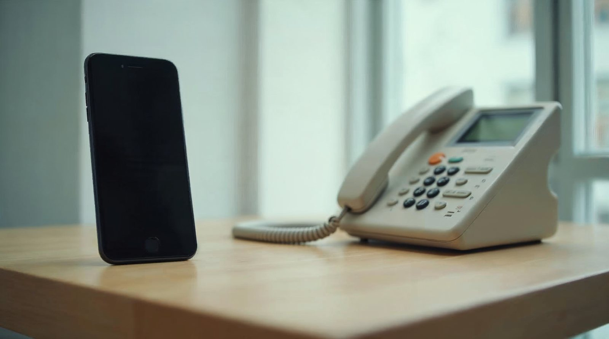
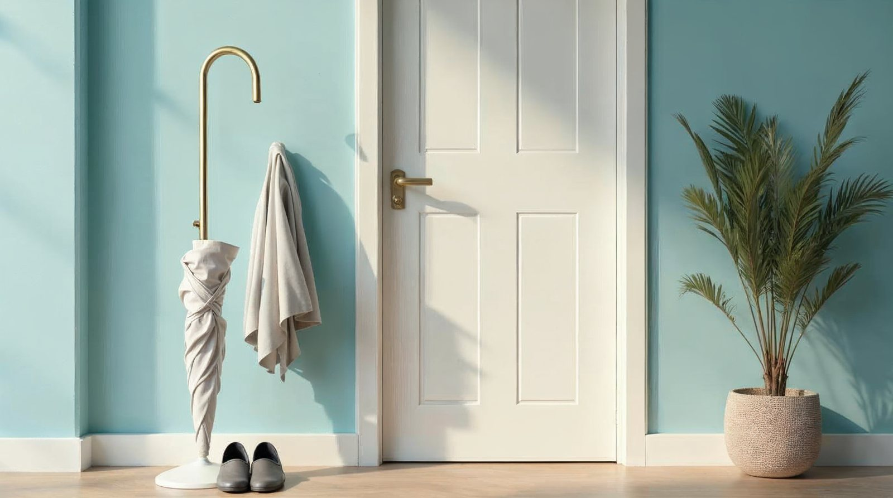
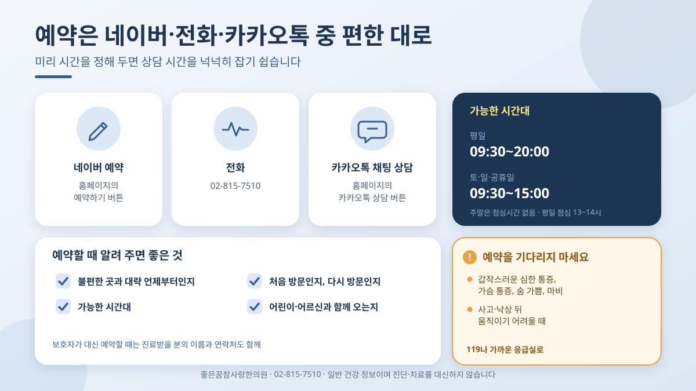

이종호 한의사 감수좋은꿈참사랑한의원 대표원장 (한의사 면허번호 19769)발행 2026-11-23 · 수정 2026-11-26
이 글의 차례
- 왜 예약을 먼저 하면 좋을까요
- 예약과 문의 방법
- 세 가지 방법 중 무엇이 나에게 맞을까요?
- 예약할 때 알려 주면 좋은 것
- 전화로 예약할 때는 이렇게 말씀해 보세요
- 왜 예약할 때 불편한 곳을 간단히 알려 주면 좋을까요
- 처음 방문이라면 예약 시간은 어떻게 고를까요?
- 시간이 빠듯한 직장인과 수험생은 어떻게 예약할까요?
- 아이를 예약할 때는 무엇을 알려 주면 좋을까요?
- 가족이 대신 예약할 때는 무엇을 챙길까요?
- 예약하기 전에 스스로 정리해 보세요
- 한의원에서 함께 살필 수 있는 경우
- 한약 상담을 예약할 때는 무엇을 알려 주면 좋을까요?
- 진료 받는 날은 어떻게 지내고 오면 좋을까요?
- 예약한 날까지 집에서 해 두면 좋은 것
- 예약 시간보다 일찍 도착하면 무엇을 하면 좋을까요?
- 통증이 심해서 오래 기다리기 어렵다면
- 예약해 두었는데 불편이 줄어들었다면 어떻게 할까요?
- 처음 오신 날 진료실에서는 무엇을 하나요?
- 다시 오실 때 예약은 어떻게 하나요?
- 이렇게 기록해 오시면 상담이 쉬워집니다
- 이런 증상은 먼저 확인이 필요합니다
예약은 네이버 예약, 전화, 카카오톡 채팅 상담 중 편한 방법으로 하시면 됩니다. 처음 방문이든 다시 방문이든 예약을 먼저 하면 대기와 일정을 가늠하기 쉽습니다. 좋은꿈참사랑한의원은 세 가지 방법으로 문의할 수 있습니다.
전화번호를 눌러 놓고 통화 버튼 앞에서 망설인 적이 있으신가요. 뭐라고 말을 꺼내야 할지, 이 정도 불편으로 예약해도 되는지, 괜히 바쁜 시간에 전화하는 건 아닌지 이런저런 생각이 듭니다. 그러다 보면 하루가 지나고, 불편은 그대로 남지요.
예약은 어렵게 생각하지 않으셔도 됩니다. 언제 오실 수 있는지, 어디가 불편한지만 알려 주시면 충분합니다. 이 글에는 세 가지 방법을 어떻게 고르면 좋은지, 예약할 때 무엇을 말하면 되는지, 예약한 날까지 집에서 무엇을 해 두면 좋은지를 차례로 적었습니다.
왜 예약을 먼저 하면 좋을까요
- 미리 시간을 정해 두면 기다리는 시간을 줄이고 상담 시간을 넉넉히 잡기 쉽습니다.
- 처음 방문인지 알려 주시면 접수와 문진에 필요한 시간을 고려해 안내할 수 있습니다.
- 어린이나 어르신과 함께 오시면 미리 알려 주실수록 진료 순서를 편하게 맞출 수 있습니다.
- 주말·공휴일은 오후 3시에 진료가 끝나 예약을 미리 잡아 두는 편이 안전합니다.
- 통화가 어려운 시간에는 네이버 예약이나 카카오톡 채팅으로 남겨 두실 수 있습니다.
- 예약 시간에 맞춰 오시면 처음 오신 분도 이야기를 충분히 나눌 시간을 확보하기 쉽습니다.
예약과 문의 방법
- 네이버 예약: 홈페이지의 예약하기 버튼에서 바로 열립니다.
- 전화: 02-815-7510으로 문의합니다.
- 카카오톡 채팅 상담: 홈페이지의 카카오톡 상담 버튼으로 이어집니다.
세 가지 방법 중 무엇이 나에게 맞을까요?
네이버 예약은 화면에서 날짜와 시간을 직접 보며 고르고 싶은 분께 편합니다. 일정표를 옆에 펴 놓고 천천히 고를 수 있고, 근무 중이라 통화가 어려울 때도 남길 수 있습니다. 예약한 내용이 화면에 남아 있어 나중에 다시 확인하기도 쉽습니다.
전화는 궁금한 것을 바로 묻고 답을 듣고 싶은 분께 맞습니다. 오늘 접수가 가능한지, 이런 불편도 상담할 수 있는지, 주차는 되는지처럼 한 번에 여러 가지를 확인할 수 있지요. 말로 설명하는 것이 글로 쓰는 것보다 편한 어르신께도 전화를 권합니다.
카카오톡 채팅 상담은 조용한 곳에 있지 않아 통화가 어렵거나, 궁금한 점을 글로 정리해 남기고 싶을 때 씁니다. 다만 바로 답을 드리기 어려울 때가 있어, 급하게 확인할 일은 전화가 빠릅니다.
어느 방법을 고르셔도 괜찮습니다. 중요한 것은 불편을 오래 미루지 않고 한 번 이야기를 꺼내 보시는 것입니다. 처음 연락이 가장 어렵고, 그다음부터는 한결 쉬워집니다.

예약할 때 알려 주면 좋은 것
- 불편한 곳과 대략 언제부터인지
- 처음 방문인지, 다시 방문인지
- 가능한 시간대(평일 저녁 8시까지, 토·일·공휴일 오후 3시까지)
- 어린이나 어르신과 함께 오는지
- 보호자가 대신 예약할 때는 진료받을 분의 이름과 연락처를 함께 알려 주기
전화로 예약할 때는 이렇게 말씀해 보세요
긴 설명은 필요 없습니다. 예를 들어 "처음 가려고 하는데요, 2주 전부터 허리가 아파서요. 목요일 저녁 7시쯤 가능할까요?" 정도면 충분합니다. 이름과 연락처를 말씀해 주시면 예약이 이어집니다.
어떤 진료를 받아야 할지 모르겠다면 그대로 말씀하셔도 됩니다. "잠을 잘 못 자는데 한의원에서도 상담하나요?"처럼 여쭤 보시면 방문 상담이 맞는지 안내해 드립니다. 모르는 것을 묻는 것은 전혀 부끄러운 일이 아닙니다.
통화 중에 받아 적을 것이 있을 수 있으니 메모지나 휴대폰 메모장을 열어 두고 전화하세요. 예약한 날짜와 시간, 챙겨 올 것을 바로 적어 두면 나중에 헷갈리지 않습니다. 통화를 마친 뒤 휴대폰 달력에 예약을 넣어 두고, 전날 알림을 맞춰 두시면 잊어버릴 걱정도 줄어듭니다.
왜 예약할 때 불편한 곳을 간단히 알려 주면 좋을까요
같은 한 시간이라도 어떤 이야기를 나눌지에 따라 필요한 시간이 다릅니다. 예를 들어 어깨 한 곳이 불편한 경우와, 잠과 소화와 통증이 함께 얽혀 있는 경우는 이야기를 듣는 데 걸리는 시간이 꽤 다릅니다. 한약 상담처럼 드시는 약과 생활을 자세히 여쭤야 하는 진료도 그렇습니다.
미리 알려 주시면 그만큼 시간을 고려해 안내할 수 있습니다. 진료실에서 마감에 쫓기지 않고 하고 싶은 이야기를 다 하실 수 있도록, 예약할 때 한두 마디만 더해 주세요.
처음 방문이라면 예약 시간은 어떻게 고를까요?
처음 오시는 날은 접수하고, 불편한 곳과 생활을 여쭙고, 진맥과 필요한 진찰을 거치는 데 시간이 걸립니다. 그래서 마감 바로 전보다는 여유가 있는 시간대를 고르시길 권합니다. 평일은 오전 9시 30분부터 저녁 8시까지(점심 13시~14시), 토·일·공휴일은 오전 9시 30분부터 오후 3시까지 진료합니다.
퇴근 뒤에만 오실 수 있다면 평일 저녁도 괜찮습니다. 다만 그날 마지막 접수 시각은 예약할 때 함께 여쭤 보세요. 주말에 처음 오신다면 오전 시간대가 넉넉합니다.
시간이 빠듯한 직장인과 수험생은 어떻게 예약할까요?
점심시간이나 퇴근 뒤처럼 쓸 수 있는 시간이 정해진 분은, 그 시간대를 예약할 때 분명히 말씀해 주세요. 예를 들어 "평일 저녁 7시 이후만 가능하다"거나 "수업이 끝나는 토요일 오전만 된다"처럼 알려 주시면 그 안에서 시간을 함께 찾습니다.
점심시간을 쪼개 오시려는 분은 진료하지 않는 13시~14시를 피해 시간을 잡아야 합니다. 처음 방문이라면 이야기가 길어질 수 있으니, 점심 짬보다는 저녁이나 주말을 권합니다. 몸 상태를 처음 살피는 날만큼은 시간에 쫓기지 않으셨으면 합니다.
아이를 예약할 때는 무엇을 알려 주면 좋을까요?
아이 진료는 보호자가 예약하시지요. 아이 이름과 함께 학교나 어린이집 일정, 학원 시간을 고려해 오실 수 있는 시간대를 알려 주세요. 아이가 지쳐 있는 늦은 시간보다는 컨디션이 괜찮은 시간대가 이야기를 나누기 좋습니다.
예약할 때 무엇이 걱정되는지 한두 마디만 알려 주셔도 됩니다. 잠을 자주 깬다거나, 밥을 잘 안 먹는다거나, 감기를 자주 앓는다는 식으로요. 진료 날에는 아이의 잠과 식사, 배변을 며칠 적어 오시면 살피는 데 큰 도움이 됩니다.
가족이 대신 예약할 때는 무엇을 챙길까요?
자녀가 부모님을, 부모가 아이를 대신 예약하는 경우가 많습니다. 이때는 진료받을 분의 이름과 연락처를 함께 알려 주시고, 누가 모시고 오는지도 말씀해 주세요. 어르신이 직접 전화를 받기 어려우시다면 보호자 연락처를 함께 남겨 주시면 됩니다.
여러 가족이 같은 날 함께 오신다면 한 번에 몇 분이 진료받는지 알려 주세요. 한 분씩 이야기를 듣고 진맥하니, 인원에 맞춰 시간을 잡는 데 도움이 됩니다.
예약하기 전에 스스로 정리해 보세요
아래 질문에 짧게 답해 보시면 예약할 때도, 진료실에서도 이야기가 한결 수월해집니다.
- 가장 불편한 곳은 어디이고, 언제부터 그랬나요?
- 하루 중 언제, 어떤 동작에서 더 불편한가요?
- 잠은 잘 주무시나요? 밥은 잘 드시나요?
- 지금 드시는 약이나 영양제가 있나요?
- 병원에서 받은 검사나 들은 설명이 있나요?
다 답하지 못해도 괜찮습니다. 떠오르는 것만 적어 오시면 나머지는 진료실에서 함께 여쭙습니다.
이 질문들은 진료실에서 제가 여쭙는 것과 거의 같습니다. 미리 한 번 생각해 보고 오시면 긴장이 덜하고, 짧은 시간에도 중요한 이야기를 먼저 꺼내실 수 있습니다.
한의원에서 함께 살필 수 있는 경우
- 어떤 진료를 받아야 할지 몰라 예약을 망설이는 경우 증상을 먼저 말씀해 주시면 어떤 상담이 맞을지 안내합니다.
- 일정이 불규칙한 경우 시간대를 함께 맞춰 봅니다.
- 통증 때문에 오래 기다리기 어려운 경우 예약할 때 미리 말씀해 주시면 시간대를 함께 맞춰 봅니다.
- 불편한 곳이 여러 군데인 경우 예약할 때 가장 불편한 곳을 먼저 말씀해 주시면 상담 시간을 맞춥니다.
- 어떤 진료가 맞을지 모르겠다면 예약할 때 불편한 곳을 간단히 알려 주시면 방문 상담이 맞는지 안내합니다.
처음 오시면 접수, 상담, 진맥과 필요하다고 판단될 때의 진찰(설진·복진·초음파 등), 상태에 맞는 치료, 귀가 전 안내 순서로 진행합니다. 다시 오시면 지난번 이야기부터 이어서 여쭙습니다.
한약 상담을 예약할 때는 무엇을 알려 주면 좋을까요?
한약 상담은 이야기를 나누는 시간이 비교적 깁니다. 주된 불편과 함께 소화, 잠, 몸의 온기, 대소변, 지금 드시는 약, 간이나 신장 상태까지 확인한 뒤에 처방을 정하기 때문입니다. 그래서 예약할 때 한약 상담을 원한다고 미리 말씀해 주시면 시간을 넉넉히 잡기 좋습니다.
드시는 약이 있다면 약 이름을 알 수 있는 봉투나 처방전을 챙겨 오세요. 임신 중이거나 임신 가능성이 있다면 예약할 때부터 알려 주시고, 산부인과 선생님과도 상의해 주세요. 받아 둔 혈액검사 결과가 있다면 함께 가져오시면 참고합니다.
진료 받는 날은 어떻게 지내고 오면 좋을까요?
진료 당일에는 과음과 무리한 운동은 피해 주세요. 침 치료를 받게 될 수 있는데, 그날 몸이 지나치게 지쳐 있거나 술기운이 남아 있으면 치료를 조정해야 할 수 있습니다. 끼니를 너무 오래 거르고 오시기보다 가볍게라도 드시고 오시는 편이 편합니다.
옷은 불편한 부위를 보여 드리기 쉬운 편한 차림이 좋습니다. 허리나 무릎이 불편하다면 너무 꼭 끼는 옷은 피해 주세요. 혈액을 묽게 하는 약을 드신다면 진료실에서 꼭 먼저 말씀해 주세요.
예약한 날까지 집에서 해 두면 좋은 것
예약한 날까지 며칠이 남았다면, 그동안 불편이 어떻게 달라지는지 하루 한 줄씩 적어 보세요. 아침과 저녁 중 언제 더 불편한지, 무엇을 한 뒤에 심해졌는지, 잠은 어땠는지 정도면 충분합니다. 진료실에서 기억에만 의지해 설명하는 것보다 훨씬 정확합니다.
드시는 약은 약 봉투나 처방전을 사진으로 찍어 두시면 편합니다. 영양제나 건강식품도 함께 찍어 두세요. 한약을 생각하고 계신다면 드시는 약을 확인한 뒤에 처방을 정하기 때문에, 이 준비가 특히 중요합니다. 지금 드시는 약은 임의로 끊지 마시고 그대로 알려 주세요.
예약 시간보다 일찍 도착하면 무엇을 하면 좋을까요?
조금 일찍 도착하셨다면 대기하는 동안 숨을 고르며 메모를 한 번 더 살펴보세요. 오는 길에 새로 느낀 불편이 있다면 덧붙여 두셔도 좋습니다. 진료실에 들어와 "아, 그 얘기를 못 했네" 하고 돌아서는 일이 줄어듭니다.
휴대폰을 오래 내려다보기보다는 등을 기대고 편히 앉아 쉬세요. 급하게 걸어오신 몸이 가라앉으면 맥도 평소의 몸을 더 잘 보여 줍니다. 처음 오신 분은 접수에 시간이 걸리니, 그 시간까지 생각해 조금 일찍 오시면 여유롭습니다.
통증이 심해서 오래 기다리기 어렵다면
허리나 무릎이 많이 아파 오래 앉아 있기도 서 있기도 힘든 날이 있습니다. 그런 날은 예약할 때 그 사정을 꼭 말씀해 주세요. 기다리는 시간이 길어지지 않도록 시간대를 함께 맞춰 봅니다.
몸이 불편해 이동 자체가 힘든 날이라면 무리해서 오기보다 전화로 상태를 먼저 알려 주세요. 예약한 날을 바꾸셔도 괜찮습니다. 몸을 먼저 살피시고, 움직이기 편해진 날 편하게 다시 잡으시면 됩니다.
예약해 두었는데 불편이 줄어들었다면 어떻게 할까요?
예약하고 며칠 지나니 통증이 한결 덜해졌다는 분도 있습니다. 그럴 때는 오실지 말지 고민되시지요. 저는 그래도 한 번 오셔서 그동안의 변화를 이야기해 보시길 권합니다. 어떤 계기로 좋아졌는지, 다시 불편해질 때 무엇을 살피면 되는지 알아 두면 다음에 도움이 됩니다.
오시기 어렵다면 예약을 바꾸거나 취소하시면 됩니다. 알게 된 즉시 전화나 네이버 예약 화면으로 알려 주세요. 그 시간을 기다리는 다른 분께 돌아갈 수 있습니다.
처음 오신 날 진료실에서는 무엇을 하나요?
가장 불편한 곳과 시작된 때를 먼저 듣고, 잠과 소화, 몸의 온기, 대소변을 여쭙습니다. 진맥은 모든 분께 합니다. 예약 시간에 맞추느라 급히 오셨다면 잠시 쉬었다가 맥을 짚습니다.
그 뒤 서고 걷고 앉는 동작을 확인하고, 필요하다고 판단되면 혀와 배를 살피거나 초음파로 확인합니다. 오늘 할 치료와 그 이유를 말씀드린 뒤 진료를 이어 가고, 귀가 전에는 집에서 지켜볼 점과 다음 방문 안내를 드립니다.
다시 오실 때 예약은 어떻게 하나요?
진료를 마칠 때 다음 방문 시기를 함께 이야기합니다. 그 자리에서 날짜를 정하셔도 되고, 일정을 확인한 뒤 네이버 예약이나 전화로 잡으셔도 됩니다. 일정이 바뀌면 알게 되는 대로 미리 알려 주세요.
다시 오실 때는 지난번 뒤로 달라진 점을 떠올려 오시면 됩니다. 처음처럼 모든 것을 다시 설명하실 필요는 없습니다. 지난 기록을 보며 이어서 여쭙겠습니다.

이렇게 기록해 오시면 상담이 쉬워집니다
- 불편이 시작된 날과 심해지는 상황
- 복용 중인 약과 지병
- 받은 검사 결과
- 예전에 받은 진료나 수술 이력
이런 증상은 먼저 확인이 필요합니다
- 갑작스러운 심한 통증, 가슴 통증, 숨 가쁨, 마비 증상이 있는 경우
- 사고나 낙상 뒤 움직이기 어려운 경우
이런 신호가 있으면 한의원보다 가까운 병원이나 응급실을 먼저 찾으세요.

한의원에서 함께 살필 것
- 어떤 진료를 받아야 할지 몰라 예약을 망설이는 경우 증상을 먼저 말씀해 주시면 어떤…
- 일정이 불규칙한 경우 시간대를 함께 맞춰 봅니다.
- 통증 때문에 오래 기다리기 어려운 경우 예약할 때 미리 말씀해 주시면 시간대를 함께…
먼저 확인이 필요한 신호
- 갑작스러운 심한 통증, 가슴 통증, 숨 가쁨, 마비 증상이 있는 경우
- 사고나 낙상 뒤 움직이기 어려운 경우
자주 묻는 질문
예약 없이 가도 되나요?
방문 전에 전화로 접수 가능 여부를 확인하시길 권합니다.
네이버 예약은 어디서 하나요?
홈페이지의 예약하기 버튼에서 네이버 예약 화면으로 이어집니다.
카카오톡으로 무엇을 물어볼 수 있나요?
방문 시간, 오시는 길, 어떤 진료를 받을 수 있는지 같은 문의를 남길 수 있습니다.
예약한 시간보다 일찍 가도 되나요?
괜찮습니다. 처음 오시면 접수에 시간이 걸리니 조금 일찍 오시면 여유가 있습니다.
가족 여러 명을 한 번에 예약할 수 있나요?
전화(02-815-7510)로 몇 분이 함께 오시는지 알려 주시면 시간을 맞춰 안내해 드립니다.
좋은꿈참사랑한의원은 재진 때 지난번 이야기부터 이어서 여쭙니다. 진료시간과 예약은 오시는 길에서 확인하세요.
어디서 상담받을 수 있나요?
좋은꿈참사랑한의원은 서울 동작구 만양로2길 2 신성빌딩 3층·5층(서울 동작구 상도동, 7호선 상도역 3번 출구 근처)에 있습니다. 한의사 3명(이종호 대표원장, 조영기 수석진료원장, 정원영 진료원장)이 진료합니다. 진료시간은 평일 09:30~20:00(점심 13:00~14:00), 토·일·공휴일 09:30~15:00이며, 방문 전 전화로 확인을 권합니다. 예약은 네이버 예약, 카카오톡 상담, 전화 02-815-7510로 받습니다.
이 글은 일반적인 건강 정보이며 개인의 진단이나 치료를 대신하지 않습니다. 증상이 있거나 복용 중인 약이 있다면 진료를 통해 확인하세요. 치료 효과는 개인마다 다를 수 있습니다.
작성 기준: 일반적으로 알려져 있는 건강 정보를 참고해 정리했습니다(대표원장 감수). 증상 기록은 1~2주 동안 하루 1회, 비슷한 시간에 적어 오시면 지난 상태와 비교하기 쉽습니다.